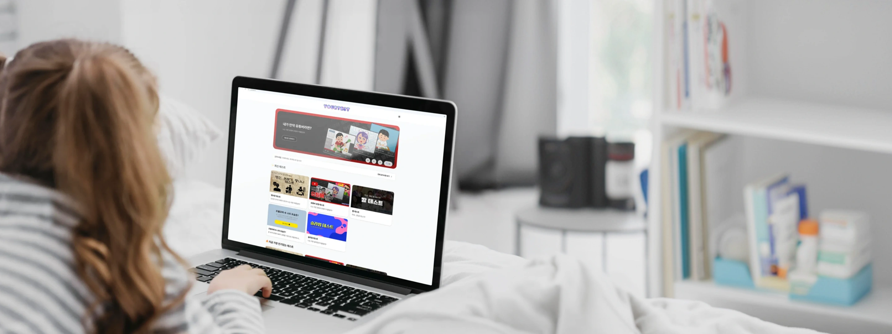
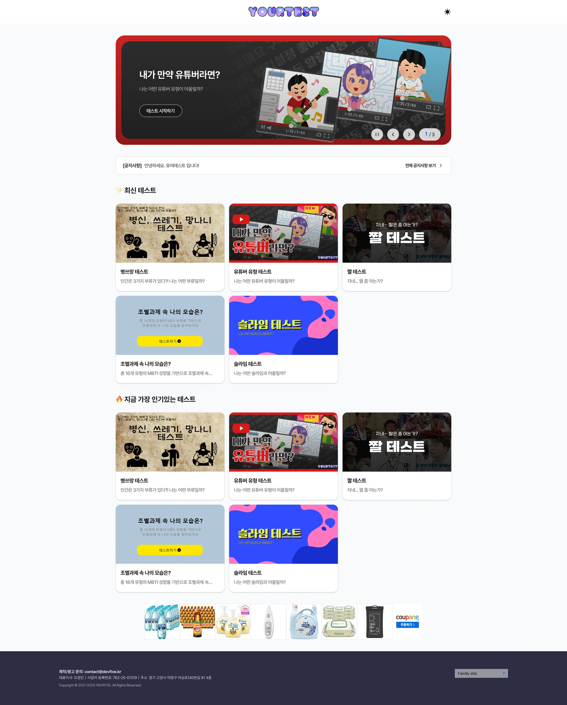
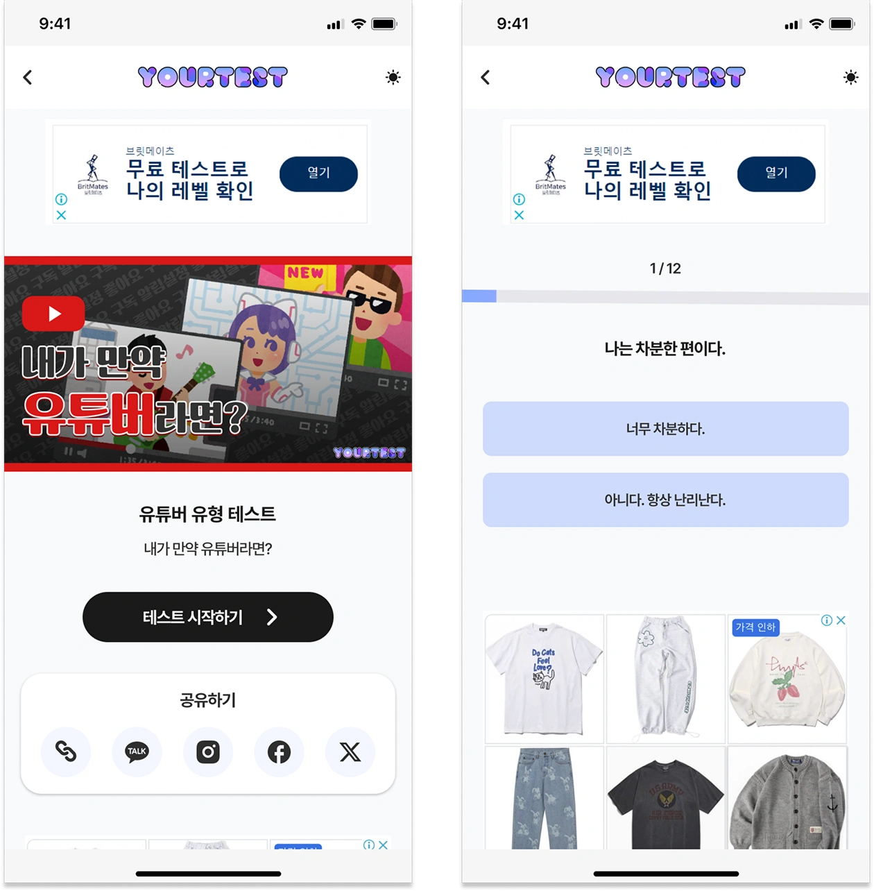

← Project Archive
Project 15 · 2025
유어테스트
회원가입 없이 다양한 심리·성향 테스트를 이용하고 결과를 공유할 수 있는 종합 테스트 플랫폼입니다.
- Role
- 프론트엔드 개발
- Period
- 2025.06 — 2025.08
- Stack
- Next.js · TypeScript
- Scope
- 테스트 참여 · 결과 · 공유 · 관리자 화면
01 / Overview
프로젝트 소개
성격 유형과 개인적 취향, 가치관 등을 알아볼 수 있는 다양한 테스트 콘텐츠를 제공하는 종합 유틸리티 플랫폼입니다. 회원가입 없이 바로 참여할 수 있으며, 직관적인 화면을 통해 자기 탐색과 엔터테인먼트를 함께 경험할 수 있도록 구성했습니다.
02 / Features
주요 기능
- 회원가입 없이 바로 참여할 수 있는 심리·성향 테스트
- 질문·응답·결과 매칭과 점수 계산을 통한 유형별 결과 제공
- 밸런스 게임, 유형 분석, 캐릭터 매칭 등 다양한 테스트 방식
- 결과 이미지 생성과 SNS 공유 인터페이스
- 테스트 등록과 결과 현황·이용 통계를 확인하는 관리자 화면
03 / Technology
기술 스택 및 프로젝트 화면
- Next.js와 TypeScript 기반 웹사이트
- 테스트 참여 흐름과 결과 공유에 최적화된 반응형 UI


